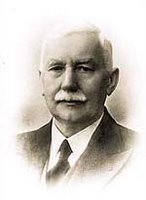

De mens volgens Johan O. Smith
Een visuele gids over geest, ziel, hart en lichaam ? volgens het onderwijs uit Verborgen Schatten. Klik je weg door het model ? elk onderdeel opent de volgende pagina.
De mens
Klik op jezelf in het model ? van God tot de leden. Je gaat meteen naar de plek in het model; tik op Verdiep voor artikelen.
Klik op een zone in de mens
Thema-overzicht (klassieke indeling)
Snel naar
De bouw van de mens
Ontdek laag voor laag wie de mens is ? van God tot de leden. Alles is klikbaar; volg je nieuwsgierigheid.
GOD
Bron van leven, licht en de Geest des levens
GEEST (pneuma)
1 Kor. 2:11
Godsbewustzijn. Contact met God. Na de val verduisterd; na verlossing vernieuwd door de Heilige Geest.
ZIEL (psyche)
Zelfbewustzijn ? ontmoetingsplaats
Macht om te kiezen wie de hele mens beheerst: geest of vlees.
Verstand
Verwerkt wat de zintuigen binnenbrengen.
Fantasie
Innerlijk zien ? beelden voor je geestesoog vormen.
Hart
Overleggingen en gedachten. Het Woord dringt hier door.
Wil / gezindheid
Kiest geest of vlees. Bepaalt of zonde volgroeit.
innerlijk zien hart wil
LICHAAM (soma / sarx)
Gods woord maakt scheiding, 1922
Zintuiglijk bewustzijn ? contact met de buitenwereld.
Werktuig voor de zonde. Afgelegd in de besnijdenis van Christus.
afgelegd bij bekeringInwonende zonde + lichaam. Oude mens gekruisigd.
actieve strijdSterfelijk vlees dat wij nu dragen.
dragen tot stervenLeden ? "Ik zie een andere wet in mijn leden" (Rom. 7:23)
Hoe het werkt
Twee paden ? klik elke stap voor uitleg uit Verborgen Schatten.
Gevallen mens
Zintuigen
Indrukken van de buitenwereld
Verstand
Verzoeking via kennis en trots
Hart
Overleggingen worden boos
Gezindheid
Stemt in met begeerte
Lichaam
Zondige werking ? bewuste zonde
Gevolg
Geest verduisterd ? ziel slaaf van vlees
"De ziel is een slaaf van het vlees geworden, in plaats van dienstknecht van de geest." ? De val van de mens, 1927
Verloste mens
Woord Gods
Scheidt ziel en geest ? Hebr. 4:12
Geest vernieuwd
Heilige Geest in de innerlijke mens
Hart
Ontvangt oordeel ? echte bekering
Gezindheid
Dient de wet Gods (Rom. 7:25)
Lichaam
Werkingen des lichaams ? doden door Geest
Gevolg
Geen veroordeling ? vrucht des Geestes
"Al wie volleerd is, zal zijn als zijn meester." ? Discipel-opwekking, Aksel J. Smith
Hoe Rom. 7 werkt
Twee wetten in ??n mens ? klik op elk onderdeel voor citaten uit Verborgen Schatten.
Twee wetten ? Rom. 7:25
Door naar Rom. 8
Waar komt verzoeking binnen?
Via de zintuigen naar het verstand, dan fantasie en hart ? klik elke stap voor citaten.
Satan / de Slang
Plant idee?n ? "gij zult als God zijn"
Buitenwereld
Woorden, beelden, indrukken via de zintuigen
Zintuigen ontvangen
Zien, horen, ruiken, proeven, voelen ? de buitenwereld komt binnen.
Verstand verwerkt
Hier komt verzoeking eerst tot uiting. Kennis, trots, "begeerlijk om verstandig te worden."
Innerlijk zien
Beelden voor je geestesoog ? de boom wordt "begeerlijk". Satan plant; begeerte trekt mee.
Hart overlegt
Overleggingen en gedachten ? getrokken door eigen begeerte.
Beslissend moment
Toegeven of weerstaan? Geen zonde v??r instemming.
Begeerte in het lichaam
Verborgen in het vlees ? laait op in verzoekingen, maar mag niet heersen. Rom. 6:12
Wat doet de gezindheid?
Toegeven
Gezindheid stemt in met begeerte ? zondige werking ? zonde in het vlees
Weerstaan
Woord + Geest ? nee zeggen ? overwinnen ? geen veroordeling
Wat is je verstand en waar vindt dat plaats?
Het verstand is een faculteit van de ziel ? het verwerkt wat de zintuigen binnenbrengen. Hier komt verzoeking eerst tot uiting; door geloof en de Geest kan het verlicht worden.
LICHAAM
Vijf zintuigen brengen indrukken binnen
ZIEL
Verstand + gevoelens + zelfbewustzijn
Gevallen: eigen verstand
Kennis, trots, "gij zult als God zijn" ? verzoeking richt zich hier eerst. Gen. 3:5?6Verlicht: door geloof
Geloof zet eigen verstand opzij ? neemt Gods verstand aan. Het verstand wordt verlicht.Zintuigen
Buitenwereld komt binnen
Verstand verwerkt
Eerste uiting van verzoeking
Innerlijk zien
Beelden vormen zich
Hart overlegt
Gedachten en overleggingen
Verlicht & geleid
Vat van de ziel gevuld door de Geest
Eerste verzoeking
Val kwam tot uiting in het verstand van de ziel
Dient Gods wet
Paulus diende de wet met zijn verstand ? Rom. 7
Verlicht door geloof
Geloof eigent zich het verstand van God toe
Wat is je geweten en waar vindt dat plaats?
Het geweten is Gods oordeel over zonde dat je voelt ? gevormd door het licht dat je hebt. Het woont in het hart en getuigt over geest, ziel en lichaam.
LICHT / WOORD
Verkondiging vormt het geweten
HART
Gods oordeel over zonde ? wetten in het hart
Slecht / verlamd
Zonde maakt onrein ? geweten verlamd als je verder zondigt zonder bekering. Wet des doods.Rein geweten
Wandelen in het licht ? geheimenis des geloofs bewaren. 1 Tim. 3:9Licht ontvangen
Woord en verkondiging vormen
Wetten geschreven
God schrijft in het hart
Keuze
Toegeven of weerstaan
Oordeel voelen
Gods oordeel over zonde
Reinig of verhard
Bekering ? rein ? of verlamd
Fundament van geloof
Geheimenis des geloofs in een rein geweten
Vrede met God
Goed geweten ? geen vrede zonder het
Levende God dienen
Niet alleen het geweten ? maar God zelf
Wat is het oordeel en hoe oordeel je jezelf?
Anderen oordelen
Tong, beschuldiging, onrecht in oordeel over anderen
ZELF OORDELEN
1 Kor. 11:31
Instemmen
Met Gods oordeel in geweten ? tuchtigen tot bekering
GODS OORDEEL VOELEN
Licht vormt geweten ? oordeelt of je naar dat licht leeft
Rom. 2:15 ? Hebr. 4:12
Oordeel negeren
Geen bekering ? geweten verlamd. Gods oordeel blijft wel bestaan.Stem in met oordeel
Rein geweten ? vrede met God. Woord bereikt het hart.Oordeel voelen
Bij zonde in het hart
Instemmen
Niet verdedigen ? zelf oordelen
Woord oordeelt
Overleggingen des harten
Oordeelslicht
Reinigen naar eis des lichts
Rein geweten
Bekering ? vrede met God
Wat is gevoel en waar vindt dat plaats?
Gevoelens horen bij de ziel ? “ik voel me zo” of “ik voel me zus”. Ze zijn niet hetzelfde als geloof; begeerte in het lichaam en verstand in de ziel kunnen ze in beweging zetten.
“Ik voel me down” · “Ik voel me niet op mijn gemak” · “Ik voel aan dat…”
Dat komt uit de ziel ? niet uit de geest. Niet blind vertrouwen.
LICHAAM
Begeerte en zintuigen wekken reacties
ZIEL
Gevoelens + verstand + zelfbewustzijn
Zielse gevoelens
Opwekking, “ik voel me”, brandende ziel ? geen geloof. Niet erop vertrouwen.Geleid door Geest
Ziel uitgegoten ? verstand en gevoelens geleidelijk verlicht. Niet naar gevoelens leven.Prikkel
Begeerte of indruk
“Ik voel me…”
Stemming, onrust, welbehagen
Overleg
Gevoel + verstand samen
Keuze
Meegaan of weerstaan
Ziel uitgegoten
Gevuld en geleid door de Geest
Niet hetzelfde als geloof
Zielse opwekking is geen geestelijk geloof
Niet op gevoel vertrouwen
“Ik voel aan dat…” ? reinig de ziel
Ziel reinigen
Gehoorzaamheid aan de waarheid ? 1 Pet. 1:22
Wat is er speciaal aan de tong en hoe spreekt hij goed?
De tong is een klein lichaamsdeel met grote macht ? een vuur onder de leden. Goed spreken begint in hart en geest; je kunt zondige gedachten weigeren uit te spreken.
Een kleine vlam steekt een groot bos in brand ? zo is de tong onder onze leden. Jak. 3:5?6
ZIEL ? HART
Gedachten en overleggingen
LICHAAM
Onder de leden ? uitgang naar de buitenwereld
Kwaad spreken
Kwaadspreken = kwaad schrijven. Door de hel in vlam gezet. Beschuldiging, bedrog.Goed spreken
Milde tong, woorden als van God. Tong weerhouden van het kwade. 1 Pet. 3:10Gedacht ontstaat
Overleg in hart en ziel
Weigeren of toestaan
Zondige gedachten niet uitspreken
Tong spreekt
Woorden naar buiten
Kracht van God
Tong bedwingen ? niet alleen eigen kracht
Milde tong
Heel lichaam in toom ? goede dagen
Tong weerhouden
Van het kwade en bedrog ? leven liefhebben
Woorden als van God
In de gemeente spreken als van God
Milde tong
Uit een rein hart ? meer dan muziek
Belangrijke onderscheidingen
J.O. Smith benadrukt: verwar deze begrippen niet ? klik op een rij.
Klik op elk lichaam en type mens
| Begrip | Wat het is | Wat te doen |
|---|---|---|
| Lichaam des vlezes | Lichaam dat diende als werktuig voor zonde | Afgelegd in Christus |
| Lichaam der zonde | Inwonende zonde verbonden met lichaam | Teniet doen ? oude mens gekruisigd |
| Lichaam des doods | Sterfelijk vlees dat wij dragen | Dragen tot de dood |
| Werkingen des lichaams | Tegen beter weten ? onbewust | Doden door de Geest |
| Werken van het vlees | Bewuste zonde door de goddeloze | Kruis ? bekering |
| Zielse christen | Gevoelens, opwekking ? geen geestelijke groei | Word geestelijk mens |
| Geestelijke mens | Geest regeert ziel en lichaam | Volwassen in Christus |
De sleutel: het Woord
Hoe ziel en geest gescheiden worden ? en het hart bereikt wordt.
Hebr. 4:12
"Het woord Gods is levend en krachtig en scherper dan enig tweesnijdend zwaard
en het dringt door, zo diep, dat het vaneen scheidt ziel en geest,
gewrichten en merg, en het schift de overleggingen en gedachten des harten."
Christus als hogepriester neemt het offermes ter hand en scheidt het zieleleven van zijn oude verbindingen.
Hoe spreekt God tot een mens?
Woord dringt door tot het hart
Gezindheid aan Gods kant
Dood werkingen ? wandel in Geest
Wat is geloof en waar vindt het plaats?
Geloof is geen zielse gevoelens ? het hoort de Geest, neemt het Woord in de geest aan, en werkt uit in gehoorzaamheid. Klik elk onderdeel voor citaten.
GOD spreekt
Woord + Geest ? bron van geloof
GEEST
Geestelijk oor hoort ? gezalfde ogen zien ? geloof onderzoekt Gods diepten
Openb. 2:7 ? Rom. 10:17
Niet: zielse mens
Gevoelens, opwekking, natuurlijk verstand ? aanvaardt geestelijke dingen niet. 1 Kor. 2:14Wel: geest van geloof
Rein hart + vaste geest ? overwint wereld en vleesVerlichte ogen des harte
Begrijpt hoop, erfenis en Gods kracht ? Ef. 1:18
Ef. 1:17-18 ? geest van wijsheid en openbaring
Woord aannemen
Door geloof het woord in uw geest
Hart bereikt
Verlichte ogen ? overleggingen beoordeeld
Instemmen
Woord en Geest samensmelten in het hart
Gehoorzaamheid
Werken des geloofs ? wat God bewerkt
Overwinning
Wereld, vlees, zonde overwonnen
Overwint de wereld
1 Joh. 5:4 ? geloof grijpt het onzichtbare
Overwint het vlees
Werkingen des lichaams doden door de Geest
Behaget God
Zonder geloof onmogelijk ? met geloof diepten Gods
De zeven Geesten Gods
Gerechtvaardigd door geloof ? de wet en Abraham
Door zijn dood
Gerechtvaardigd ? vergeving ? zonder jouw werken
Rom. 5:9-10Door zijn leven
Werken des geloofs ? wet vervuld in ons
Rom. 8:4Werken der wet
Vlees wil God behagen ? schaduw, oud verbond
WAAR?
Vier wetten
Werken des geloofs
God werkt in mij ? door de Geest
Schaduw
Mozaïsche wet ? buiten, Hebr. 10
Hart + verstand
Gods wil geschreven
Leden
Wet der zonde
Geest
Wet des levens
Geloof van Abraham
Geloofde Gods belofte ? werd hem tot gerechtigheid gerekend ? echte zoon uit eigen lichaam
Geloof
Zonder werken ? gerechtvaardigd
Werken
Isaak offeren ? geloof volmaakt
Wat is ootmoed en waar vindt het plaats?
Ootmoed is Gods wil kiezen in plaats van de eigen wil ? geschreven in hart en verstand, zichtbaar in gehoorzaamheid. De tegenpool is hoogmoed (slang-route).
Ootmoed of hoogmoed?
GODS WIL
Jezus had de Vader voor ogen ? deed in alles diens wil
Hoogmoed
Eigen wil, trots, “gij zult als God zijn”
- Verstand verleid
- Hoge gedachten over jezelf
- Geen genade
GEZINDHEID / WIL
Wie bestuurt de hele mens?
Ootmoed
Gods wil kiezen ? gehoorzaamheid
- Erkennen + plaats innemen
- Van harte, voor God
- Genade ontvangen
HART + VERSTAND
God schrijft de wet der ootmoed ? niet uiterlijke schijn
Hebr. 8:10 ? Jak. 4:6
Valse nederigheid
Schijn voor mensen, om eer te krijgen. Kol. 2:18 ? niet verbonden met Christus als Hoofd.Ware ootmoed
Verbonden met Christus. God geeft genade aan de nederigen ? weg tot groei.Erkennen
Wie je bent voor God
Innemen
De juiste plaats onder God
Gods wil kiezen
Eigen wil neerleggen
Gehoorzaamheid
Dienaar van de Geest
Genade & groei
Heiligmaking en vrijheid
Genade
God geeft genade aan de nederigen ? Jak. 4:6
Voorbeeld Christus
Ootmoed tot de dood des kruises
Dienaar van Geest
Ziel niet slaaf van vlees maar van God
Wat is het kruis en hoe en waar draag je het?
Christus' kruis heeft de oude mens medegekruisigd ? jouw kruis is dagelijks de eigen wil verloochenen en Gods wil doen ? in gezindheid en hart, in elke beproeving.
KRUIS VAN CHRISTUS
Oude mens medegekruisigd ? zonde in het vlees teniet gedaan
Eigen wil / ik
Zelfleven, eigen begeerte, trots
- Genageld aan het kruis
- Leven verliezen
- Niet mijn wil
GEZINDHEID / WIL
Elke dag, elke beproeving
Kruis opnemen
Verloochenen ? volgen ? door de Geest
- Luk. 9:23 dagelijks
- Waarheid onder ogen
- Voetsporen van Jezus
VERLOOCHENEN + OPNEMEN
Eigen wil genageld ? de wil van God doen in de tijd die rest
Luk. 9:23 ? Mat. 16:24
Zonder kruis
Valse vrijheid, valse liefde, valse blijdschap ? om het kruis heen lopen.Heerlijke kruisweg
Smalle weg ? Christus leeft in hen die gekruisigd zijn voor de wereld.Eigen wil zien
Tegen Gods wil ingaan
Zelf verloochenen
Niet mijn wil maar de uwe
Kruis opnemen
Dagelijks ? aan het kruis
Jezus volgen
Voetsporen ? gehoorzaamheid
Christus leeft
Leven van Jezus in het lichaam
Oude mens dood
Medegekruisigd ? niet langer slaven der zonde
In beproeving
Elke situatie maakt inhoud openbaar ? grijp het eeuwige leven
Opstandingsleven
Dood van Jezus werkt ? leven van Jezus openbaar ? 2 Kor. 4:10
Wat is een beproeving?
In de ziel
Idee, begeerte, innerlijke drang ? nog geen zonde vóór instemming
In het leven
Situatie, omstandigheid, mensen ? maakt zichtbaar wat er in je leeft
Jak. 1:2-3WAAR KOMT HET BINNEN?
Tong, relaties, werk, teleurstelling, onrecht, vernedering ? grotere of kleinere beproevingen dagelijks
Wat wordt er openbaar?
Het ik
Eigen leven, trots, ongeduld, eigen wil
- Als gewone mensen
- Verbinding met God weg
- Orpa keert terug
INHOUD
Wie regeert?
Christus
Deugden, liefde, geduld, ootmoed
- Leven van Jezus zichtbaar
- Door de Geest
- Grijp het eeuwige leven
Beproeving komt
Echt leven ? niet fantasie
Inhoud zichtbaar
Ik of Christus?
Proef doorstaan
Volharding werkt
Doorstaan
Eigen wil verloochenen
Groei / kroon
Louteren en reinigen
VUUR DER BEPROEVING
Beproefd worden is genade ? God loutert en reinigt, geloof wordt beproefd
Jak. 1:12 ? Job 23:10
Doorstaan
Houd het voor vreugde ? na de proef schiet je minder tekort. Volkomen worden.Afvallen
In de beproeving voedingssappen opnemen ? dichter bij God komen, niet afvallen.Geloof beproefd
Verzoeking is beproeving van ons geloof ? volharding uitwerken
Loutering
God reinigt en opent ogen voor Zijn almacht ? als Job
Kroon des levens
Wie volhardt, ontvangt wat Hij beloofd heeft
Christus als gekruisigd geschilderd
Martelaar op Golgota
Emotie, gevoel, innerlijk beeld ? betovering
Woord des kruises
Oude mens medegekruisigd ? niet meer voor jezelf leven
GEKRUISIGD MET CHRISTUS
Rom. 6:6 ? Gal. 2:20 ? Gal. 6:14
De wijnpers treden ? alleen met Jezus
ALLEEN MET JEZUS
Abraham liet de knechten achter ? alleen hij en Isaak naar Moria. Gemeenschap: enkeling + Jezus.
GEZINDHEID / HART
Elke beproeving ? eigen wil vs Gods wil
Niet mentaal vechten
Geen fantasie-strijd ? maar gehoorzaamheid in het echte leven.Wel: doorstaan
Lijden met Christus ? geloof doorstaan tot het af is.Eigen wil zien
Strijd in het hart
Wijnpers betreden
Niemand volgt mee
Ziel uitgieten
Jouw Isaak offeren
Gods wil doen
Koste wat het kost
Sterken als buit
Vrucht verbrijzeld ? nieuwe wijn
De volledige weg volgens Verborgen Schatten
Meer dan alleen vergeving: bekering, doop, dagelijks kruis, overwinning en heiligmaking ? tot gelijkvormigheid aan Christus.
Halve weg
Vergeving zoeken ? niet overwinnen
- Tot Hem komen zonder discipel
- Eigen leven behouden
- Geen kruisweg
DISCIPEL
Volgen en leren van de Meester
Gelijk aan Christus
Van licht tot licht ? volmaakte rijpheid
- Luc. 6:40 als de Meester
- Verborgen leven met Christus
- Gehoorzaamheid leren
Verzoening
Genadegeschenk ? begin
Bekering
Hart ontvangt oordeel
Geloof + Geest
Kracht ontvangen
Doop
Lichaam des vlezes afgelegd
Kruisweg
Dagelijks zelfverloochening
Overwinning
Over bewuste zonde
Heiligmaking
Van licht tot licht
Bezoedeling des vleses en des geestes
Bezoedeling des vlezes
Lichaam ? begeerte ? wereld
Reinigen van alle bezoedeling
Heiligheid volmaken
in de vreze Gods
Bezoedeling des geestes
Leer ? houding ? leugen
Met God in de hemel geplaatst ? wat gebeurt er?
In de hemel geplaatst
Dagelijkse praktijk op de weg
Gebed
Uit nood en honger ? niet lege woorden. Om Geest en wijsheid.
Luc. 11 ? Jak. 1:5Woord vasthouden
Grijpen op het moment dat het je raakt ? richting in situaties.
Hebr. 4:12Gehoorzaamheid
Nee tegen eigen wil, ja tegen Gods wil ? in het echte leven.
Rom. 1:5VAN LICHT TOT LICHT
Nieuwe en levende weg door het vlees ? reiniging in het bloed van Jezus
Hebr. 10:20 ? 2 Kor. 3:18
Ware discipel
Komt om bij Hem te blijven en van Hem te leren ? Hem gelijk worden.Doorsnee gelovige
Vergeving en genezing ? maar weinig interesse om van de Meester te leren.Overwinning
Christus zegeviert over het ik door de Heilige Geest
Heiligmaking
Zonde doden waar licht komt ? wandelen in de Geest
Volmaakte discipel
Al wie volleerd is, zal zijn als zijn meester